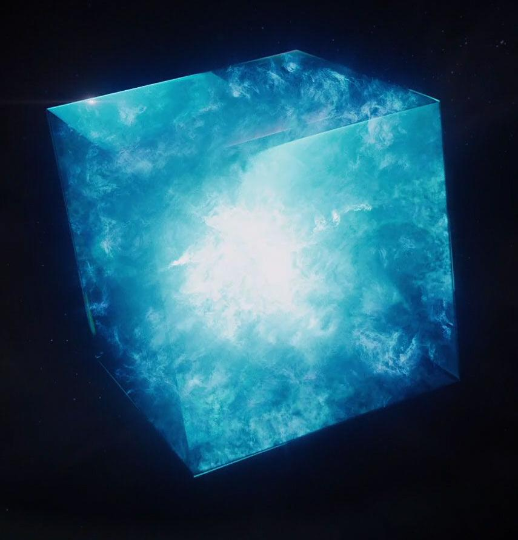

The Space Stone gives the user the ability to travel anywhere the user wishes to go. The first appearence of the Space Stone was in Captain America: The First Avenger. At first fans thought the Tesseract was going to be the Cosmic Cube from the comics. The Cosmic Cube would give the user to create anything they wished. But after the vision Thor got from Avengers: Age of Ultron. Fans found out that the Tesseract is the containment field/center of the Space Stone. After the events of the Avengers, Thor took the Tesseract back home on Asgard, put it in the vault. But during the starting sequence of Ragnarok, when Loki had to put he skull on the eternal flame. He managed to take the tesseract. But when Thanos came in to steal the tesseract, Loki gave it up to save his half brother Thor. "But how did the Tesseract end up on Earth?" Most people asked. Well, soon after Cap went on ice. Howard Stark set out on a expedition to find him. But he found the Tesseract. Then in the 1990's, Dr. Wendy Lawson got ahold of the Tesseract. She used it to manipulate it's power for a light speed engine. The light speed engine was supposed to end the war between the Kree and the Skrulls. She knew about the inter-galactic war because she is part of the Kree race. She had the tesseract be safely hidden in her lab in orbit because she didn't want the power to get into the wrong hands. But during the events of Captain Marvel, Carol had acquired the Tesseract and trusted Fury to keep it safe. That was when Nick had the idea of reactivating Project Pegasus to work on the tesseract, and to try to acquire the unlimited sustainable energy the Tesseract had.
By YouTube CC-BY & Stone image by Pinterst CC-BY